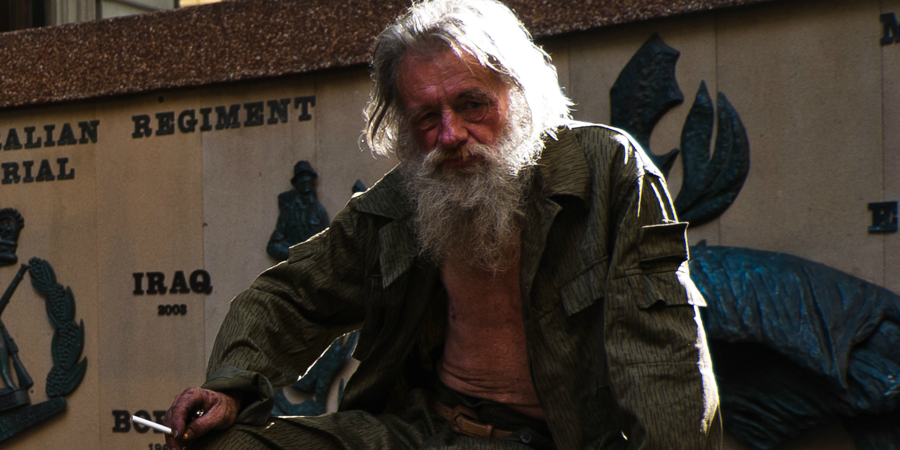

E N A C T U S - L E I C E S T E R
F R E S H - S T A R T
We will be working with a homeless shelter in Leicester to empower a group of homeless people to develop their employability skills and competencies.
We will be delivering a series of workshops at the shelter, ranging from 'CV: Advice and Information', to 'Team-Working: How to.' We will also be trying to combat the problem of food waste into the Project through the making of food packs for the homeless.
Project Leader Contact Details:
enactusfreshstart@gmail.com